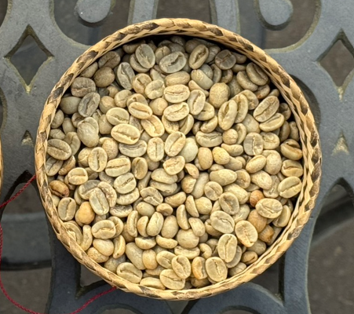
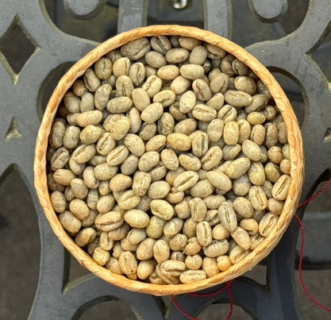

私たちが普段何気なく口にしているコーヒー豆。その収穫現場において、ごく稀に姿を現す丸々とした一粒の美しい豆があります。それが「ピーベリー（丸豆）」です。

収穫されるコーヒー豆（生豆）のおよそ95〜98%はフラットビーンという表面が平らで亀の甲羅状のお豆になります。
コーヒー豆というのは、チェリーという実の種にあたるものを言います。
収穫したチェリーの実を取り除くと、２粒のコーヒー豆が向かいあって在るため、表面が平らで亀の甲羅状のフラットビーンが２粒収穫できます。

しかし、ごく稀にこの２粒が合体して成長し、丸々とした１粒のコーヒー豆を収穫することができます。この丸々としたお豆をピーベリーと言います。
傾向としては、樹齢が若い木や枝の先端になることが多いです。つまり、栄養の巡りが一番良いところに、ピーベリーはできるというわけです。
当店では、農園さま農協さまの協力の元、ピーベリーのみを選別してもらっています。
皆さんご存知のコーヒー産地、グァテマラやキリマンジャロ、マンデリンなど、さまざまな産地のピーベリーを取り揃えております。
フラットビーンとピーベリーを比較すると、ピーベリーの方が、コクと香りが強いです。
ぜひ一度、お試しください。